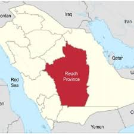

Riyadh is the capital of Saudi Arabia and the largest city on the Arabian Peninsula. Located in the center of the an-Nafud desert, on the eastern part of the Najd plateau, the city sits at an average of 600 metres (2,000 ft) above sea level, and receives more than 16 million tourists each year, making it the 2nd most visited city in the Arab world. Riyadh had a population of 7.6 million people in 2019, making it the most populous city in Saudi Arabia, 2nd most populous in the Arab world (after Cairo), and 38th most populous in Asia.